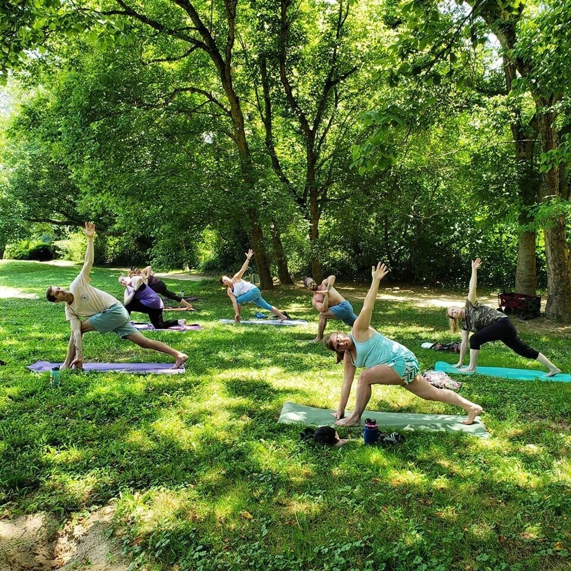

COMMUNITY EVENTS
Our community in Haarlem decided to make small gatherings and welcome people on our new
events to embrace wellbeing, fitness, nutrition, energy-providing and joy-bringing. Here is all
you can find and choose any activities you like
Healthy Cooking Classes

These classes educate participants how to cook healthfully by teaching them balance flavors, and develop recipes that are high in nutrients. They provide information about choosing ingredients, controlling portions, and cooking methods that enhance general health. Participants can also learn how to plan meals for a healthier lifestyle.
Outdoor Yoga Sessions

Outdoor yoga combines the physical and mental benefits of yoga with the calming effects of nature.
Participants can enhance flexibility, strength and balance while also reducing stress and increasing
mindfulness. Practicing yoga can also boost mood, increase vitamin D intake and create a deeper
connection with the environment
Community Garden Workshops
These workshops teach participants how to grow their own fruits, vegetables and herbs promoting healthy eating. They also foster a sense of community, encouraging collaboration and shared responsibility. Gardening is good for mental health in addition to offering a physical activity and it also lowers stress.
Bike Rides For Beinners
Beginner bike rides help participants improve their health and build endurance in a low-impact way.
It is common knowledge that The Netherlands is well-known for cycling and a lot of internationals
do not know how to ride a bike. These sessions often include instructions on proper bike handling,
road safety, and how to build confidence in cycling. They are fantastic for getting moving, discovering new places and leading an active lifestyle.